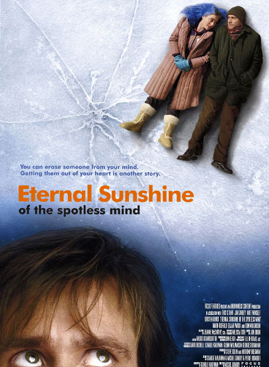

Eternal Sunshine of the Spotless Mind (2004)
108 min - Drama - Romance
A man, Joel Barish, heartbroken that his girlfriend Clementine underwent a procedure to erase him from her memory, decides to do the same. However, as he watches his memories of her fade away, he realizes that he still loves her, and may be too late to correct his mistake.
Reviews
- "How happy is the blameless vestal's lot! The world forgetting, by the world forgot. Eternal sunshine of the spotless mind! Each pray'r accepted, and each wish resign'd." - Alexander Pope
- "Eternal Sunshine of the Spotless Mind" is a beautiful movie, eloquently voiced by Gondry, firmly constructed and rooted in an eerie nightmarish fantasy land where anything is possible. It's beautiful, it's bizarre, it's exceptional, it's funny, it's lovely, it's touching, it's witty, and it's one of the best movies I have ever seen."
Relased: July 2004
Director:Michael Gondry